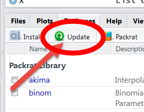

The toxEval R-package includes a set of functions to analyze, visualize, and organize measured concentration data as it relates to ToxCast data (default) or other user-selected chemical-biological interaction benchmark data such as water quality criteria. The intent of these analyses is to develop a better understanding of the potential biological relevance of environmental chemistry data. Results can be used to prioritize which chemicals at which sites may be of greatest concern. These methods are meant to be used as a screening technique to predict potential for biological influence from chemicals that ultimately need to be validated with direct biological assays.
The functions within this package allow great flexibly for exploring the potential biological affects of measured chemicals. Also included in the package is a browser-based application made from the Shiny R-package (the app). The app is based on functions within the R-package and includes many convenient analyses and visualization options for users to choose. Use of the functions within the R-package allows for additional flexibility within the functions beyond what the app offers and provides options for the user to interact more directly with the data. The overview in this document focuses on the R-package. Documentation for the app is provided in the ShinyApp vignette.
This vignette provides a general overview of the concepts within toxEval, definitions of common terminology used throughout the package, and links to information to help understand fundamentals of the ToxCast database used within toxEval. In addition, instructions are provided for installing and updating the package from the Geological Survey R Archive Network (GRAN).
The U.S. EPA’s Toxicity Forecaster ToxCast includes a database of chemical-biological interactions that contains information from hundreds of assays on thousands of chemicals, providing a means to assess biological relevance to measured concentrations. The toxEval package attempts to simplify the workflow for exploring data as it relates to these assay endpoints (benchmark data). The workflow uses ToxCast as a default for evaluation of chemical:biological interactions, but the user may also define alternative benchmarks for a custom or more traditional approach to biological relevance evaluation. This is also a useful capability for efficient comparison of ToxCast evaluation results with those from other toxicity benchmark databases.
When using the ToxCast endPoints for analysis, it is important to have at least a minimal understanding of what ToxCast data is, and which ToxCast data is relevant to any given study. There are many useful resources here. There is also a tool called the Comptox Dashboard that has a wealth of information on ToxCast data.
So what are we doing with the user input data and ToxCast? First, we calculate an Exposure-Activity Ratio (EAR) for each measurement. Then we can explore the EARs based on a wide variety of groupings to view the data in many dimensions.
An Exposure-Activity Ratio (EAR) is defined as the ratio of a measured concentration and a concentration that was determined to cause some activity in a specified ToxCast assay (“endPoint” concentration). An EAR > 1.0 would indicate that the measured concentration is greater than the endpoint concentration. The ToxCast database (as provided in the current version of toxEval) provides as many as several hundred endPoints for more than 7000 chemicals. Each endPoint is a single test that was done to detect some form of biological activity.
In order to get appropriate EAR results, it is important to use the correct units. The toxEval package assumes all measured concentrations are reported in micrograms per liter (\(\mu\)g/L). ToxCast data is reported in log(\(\mu\)M), so the toxEval package automatically performs the unit conversion.
A secondary option within toxEval is for the user to provide a set of “benchmark concentrations” to define custom biological responses to meet specific study objectives (e.g. water quality criteria). In this case, EAR values are replaced with toxicity quotients. Similar to EAR values, toxicity quotients are defined as the ratio of a measured concentration to the benchmark concentration.
EAR is basically synonymous with bioanalytical equivalent concentrations (BEQ). EAR is a ratio, and BEQ is a measure of concentration, but both convey the same information.
ToxCast uses high-throughput assays to create concentration-response curves for each of these chemical:endPoint combinations. An endPoint is “associated with the perturbation of specific biological processes identified for the confirmation or monitoring of predicted site-specific hazards” Blackwell 2017. That means a specific biological action was tested, and the concentration at which activity was observed was determined. Of several endpoint values provided within the ToxCast database, the activity concentration at cutoff (ACC) was chosen to compute EAR values within the toxEval package, consistent with the description in Blackwell, 2017. ACC values from the ToxCast database are provided within the toxEval package.
Often, it is valuable to consider aggregations of single endPoints in evaluation efforts. ToxCast has provided tables that group individual endPoints into generalized categories for functional use. The grouping summary table is included in toxEval and can be explored via the end_point_info data:
library(toxEval) end_point_info <- end_point_info
See the help file ?end_point_info for specifics on how the table was downloaded.
Throughout the toxEval analysis, there are graphing and table functions that will summarize EARs based on either “Biological” groupings (as defined by a group of endPoints) or “Chemical Class” groupings (as defined by a group of chemicals).
The default grouping of ToxCast endPoints is “intended_target_family”, but depending on the analysis, it may be more appropriate to use other grouping categories. To change the default, specify a grouping in the groupCol argument of the filter_groups function. For example:
filtered_ep <- filter_groups(end_point_info, groupCol = "intended_target_family", assays = c("ATG","NVS", "OT", "TOX21", "CEETOX", "APR", "CLD", "TANGUAY", "NHEERL_PADILLA","NCCT_SIMMONS", "ACEA"), remove_groups = c("Background Measurement", "Undefined"))
What is happening here is that the supplied data frame end_point_info is filtered to just the “intended_target_family” group. Additionally, the assay BioSeek is removed (it is the only one not included in the possible list of assays). Finally, of all the groups within intended_target_family, the end points designated “Undefined” and “Background Measurement” are removed.
The functions in toxEval summarize the data as follows:
First, individual EAR values are calculated for each chemical:endPoint combination. Then, the EAR values are summed together by samples (a sample is defined as a unique site/date) based on the grouping picked in the “category” argument. Categories include “Biological”, “Chemical Class”, or “Chemical”. “Biological” refers to the chosen ToxCast annotation as defined in the groupCol argument of the filter_groups function. “Chemical Class” refers to the groupings of chemicals as defined in the “Class” column of the “Chemicals” sheet of the input file. “Chemical” refers to the individual chemical as defined by a unique CAS value. Finally, the maximum or mean EAR is calculated per site (based on the mean_logic option). This ensures that each site is represented equally regardless of how many samples are available per site.
Some functions will also include a calculation for a “hit”. A threshold is defined by the user, and if the mean or maximum EAR (calculated as described above) is greater than the threshold, that is considered a “hit”.
toxEval does require a fair number of additional packages to run properly. These dependencies offer many benefits, such as a smooth running intuitive Shiny app. The drawbacks however are that there becomes more risk that those dependencies could change their output/workflow over time. toxEval developers will try to stay on top of those changes, but it is a challenge. It is important to always update all of your packages therefore…..not just toxEval. toxEval may push out a new version to keep up with a critical change in a dependent package, and if you only update toxEval, the update could cause bugs (we will attempt to mandate the package version of each package, but it still is best to stay on top of new package versions).

Regularly, it is a good idea to update ALL of installed packages in R. If using RStudio, this is done by using the Update button in the “Packages” tab in RStudio. Selecting this option checks CRAN for updates. Within the R-console, packages can be updated with the command:
If you discover an issue that you feel is a bug in the package or have a question on functionality, please consider reporting bugs and asking questions on the Issues page: https://github.com/USGS-R/toxEval/issues
This package has not been reviewed and approved as a USGS-product. The implication is that toxEval cannot be cited in a publication. Once the software has been reviewed and approved, basic citation information will be available using the function:
citation(package = "toxEval")
##
## To cite toxEval in publications, please use:
##
## De Cicco, L.A., Corsi, S.R., Villeneuve D.L, Blackwell, and B.R,
## Ankley, G.T., 2018, toxEval: Evaluation of measured concentration
## data using the ToxCast high-throughput screening database or a
## user-defined set of concentration benchmarks. R package version
## 1.1.0., https://code.usgs.gov/water/toxEval, doi:10.5066/P906UQ5I
##
## A BibTeX entry for LaTeX users is
##
## @Manual{,
## author = {Laura A. {De Cicco} and Steven R. Corsi and Daniel L. Villeneuve and Brett R. Blackwell and Gerald T. Ankley},
## title = {toxEval: Evaluation of measured concentration data using the ToxCast high-throughput screening database or a user-defined set of concentration benchmarks.},
## publisher = {U.S. Geological Survey},
## version = {1.1.0},
## address = {Reston, VA},
## institution = {U.S. Geological Survey},
## year = {2019},
## doi = {10.5066/P906UQ5I},
## url = {https://code.usgs.gov/water/toxEval},
## }This software has been approved for release by the U.S. Geological Survey (USGS). Although the software has been subjected to rigorous review, the USGS reserves the right to update the software as needed pursuant to further analysis and review. No warranty, expressed or implied, is made by the USGS or the U.S. Government as to the functionality of the software and related material nor shall the fact of release constitute any such warranty. Furthermore, the software is released on condition that neither the USGS nor the U.S. Government shall be held liable for any damages resulting from its authorized or unauthorized use.